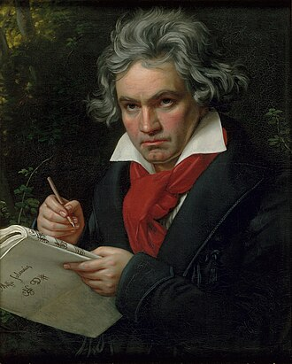

10-MINUTE EXECUTIVE BRIEFING
PART 2 動力架構（搭建克服障礙的鷹架）｜CHAPTER 4（p.146–p.174）
《隱性潛能》改變日常磨練：
為練習注入和諧式熱情
作者：亞當・格蘭特（Adam Grant） ｜ 導讀節奏：16 頁精華・每頁 40–45 秒・10 分鐘完整掌握
🎯 一句話核心主張（本章到底在解決什麼問題？）
釋放隱性潛能的最好方法，並不是靠意志力忍受每天單調的磨練，而是透過「刻意玩樂、交錯練習與定時休息」打造動力鷹架，把每天的苦練轉變成日常的快樂泉源。
127 項研究 / 4.5萬人
後設分析證實：唯有「和諧式熱情」支撐，堅持到底才更能轉化為卓越績效（p.152）
+43% 銷售額 ／ 8%→40%
業務角色扮演提升 43% 門票銷量（p.156）；跟練柯瑞刻意玩樂 50 天三分球命中率暴增 5 倍（p.167）
20 分鐘法則 ／ +10~30%
每 20 分鐘交錯練習與定時休息，學後休息 10 分鐘提升 10%–30% 記憶力（p.166, 171, 173）
題辭：「滿足我們的，既不是工作，也不是玩樂；既不是目的，也不是漫無目的，而是中間的反覆橫跳。」——遊戲設計師伯納德・德科文（p.146）
按 → 或空白鍵開始導讀
2. 全書（本章）架構圖 ｜ 整體邏輯骨架
閱讀節奏：45 秒 ｜ 來源：p.146–p.174
突破日常磨練的倦怠瓶頸，需以「和諧式熱情」取代強迫苦練，並靠三大動力鷹架支撐持續精進
① 問題診斷
傳統苦練的雙重陷阱
盲目崇拜「一萬小時定律」與單調刻意練習（「我必須練」的強迫壓力）
強迫型工作者工時雖長，績效卻未優於同儕，反而同時陷入生理與心理雙重耗竭（p.150–151）：
🔥 過勞（Burnout）
過度工作造成情緒耗竭
過度工作造成情緒耗竭
🧊 悶爆（Boreout）
刺激不足與單調造成麻木
刺激不足與單調造成麻木
② 核心框架
第 1 節：進入和諧狀態
從「強迫式熱情（我應該）」轉向「和諧式熱情（我想要）」→ 自然進入心流（Flow）
練習豐富生活，而非主宰生活
國際鋼琴家幼時每日僅練 1 小時（Sosniak 研究）；127 項研究、逾 45,000 人證實：有熱情支撐，堅持才更能帶來卓越表現（p.151–152）。
③ 三大方法鷹架
第 2–4 節互相支撐
支柱 A ｜ 第 2 節：樂在玩樂
刻意玩樂（Deliberate Play）
融合「結構化精進」與「自由玩樂」，在方法/工具/目標引入新奇與多樣性；改造任務本身而非表面積分遊戲化。
▸ 案例：葛蘭妮、快針護士、巴西籃球
▸ 案例：葛蘭妮、快針護士、巴西籃球
支柱 B ｜ 第 3 節：改變遊戲規則
交錯練習 × 與過去自己競爭
拒絕「先樂後苦」對比陷阱，把枯燥體能揉進核心遊戲；每隔 20 分鐘交錯切換挑戰（Interleaving），同時突破目標分數與時間。
▸ 案例：棉花糖測試、柯瑞 21 分遊戲
▸ 案例：棉花糖測試、柯瑞 21 分遊戲
支柱 C ｜ 第 4 節：讓我休息一下
定時主動休息 × 間歇重複
即使刻意玩樂也不該耗盡整天！油箱半滿即休息，單次不超過 20 分鐘，達成維持熱情、孵化創意、鞏固記憶（+10~30%）。
▸ 案例：馬友友、米蘭達、小提琴女孩
▸ 案例：馬友友、米蘭達、小提琴女孩
架構總結
三大鷹架環環相扣：「刻意玩樂」點燃內在動機 →「交錯與改規則」攻克枯燥基本功 →「定時休息」防止熱情耗竭，形成永續成長閉環。
《隱性潛能》CH4 改變日常磨練 ｜ 全章邏輯骨架圖
Source: Adam Grant, Hidden Potential, Ch.4 (p.146–174)
3. 逐章（節）重點 ① ｜ 開場案例：失聰打擊樂女王（p.146–p.150）
閱讀節奏：45 秒
依芙琳・葛蘭妮從 12 歲全聾、遭音樂學院拒絕到登頂全球，關鍵在於老師搭建的「感官玩樂鷹架」
本節核心論點
當傳統枯燥的音階苦練完全行不通時，透過改變感知路徑並將練習設計成「電玩升級般的挑戰」，能把身體限制轉化為無可取代的藝術優勢。
亮點 01 ｜ 反直覺逆襲數據
從「毫無希望」到全球首位全職獨奏打擊樂家
100 場 / 年 ＋ 3 座葛萊美
2015 年獲頒「音樂界諾貝爾獎」極地音樂獎
葛蘭妮 8 歲起聽力衰退、12 歲因神經退化完全失聰。首次報考倫敦皇家音樂學院時，演奏定音鼓《威廉・泰爾序曲》、木琴與莫札特奏鳴曲，卻被評審斷言「毫無希望成為職業音樂家」。然而不到 10 年後，她每年在全球舉辦 100 場售罄音樂會並獲封女爵士（p.146–148）。
亮點 02 ｜ 獨特訓練方法
把身體變成「一隻巨大的耳朵」：牆壁與赤腳練習
🎵 高音頻震動
對應：臉部、顴骨、頭皮、頸部
🥁 低音頻震動
對應：腹部、腿部、赤腳腳掌
學校打擊樂老師羅恩・福布斯（Ron Forbes）不逼她練枯燥音階，而是讓她把手貼在牆上感受定音鼓震動，並開始赤腳練習，透過手腕、手臂、顴骨與腳底的共振分辨音高（p.148–149）。
亮點 03 ｜ 鷹架式挑戰設計
像在電玩遊戲裡升級：用小鼓挑戰演奏巴哈
「玩樂與努力之間從來沒有區別，我就像海綿一樣。」
羅恩在小鼓上不斷縮小音高之間的差距，讓她像電玩破關一樣學習用指尖分辨細微差異；並拋出新奇挑戰：「看到這首巴哈的曲子嗎？妳覺得可以用小鼓演奏嗎？」促使她開創出詮釋巴哈的當代鼓樂風格（p.149）。
一句話總結
在音樂中，「演奏」與「玩樂」同為 Play 並非巧合——釋放隱性潛能的最好方法不是忍受日常磨練，而是把磨練轉變成日常的快樂泉源（p.149–150）。
《隱性潛能》CH4 改變日常磨練 ｜ 開場案例：依芙琳・葛蘭妮（Evelyn Glennie）
Source: Hidden Potential, Ch.4 (p.146–150)
3. 逐章（節）重點 ② ｜ 第 1 節：進入和諧狀態（p.150–p.153, 155）
閱讀節奏：45 秒
強迫式苦練會同時引爆「過勞與悶爆」；127 項研究證實唯有「和諧式熱情」能驅動長遠卓越
本節核心論點
「一萬小時定律」的單調刻意練習只適用於高度可預測的固定動作；頂尖專家並非靠虎爸虎媽強迫，而是靠「我想要學」的和諧式熱情進入心流。
亮點 01 ｜ 破除莫札特神話與雙重耗竭（p.151）
莫札特童年受父親「毫無保留的奴役」（十幾歲寫道手指因寫太多宣敘調而疼痛，近 30 歲感嘆演出太多好累）——他成功不是「因為」強迫練習，而是「熬過了」強迫練習的折磨。強迫苦練會同時引發過勞（Burnout，過度工作情緒耗竭）與悶爆（Boreout，刺激不足與單調的情緒麻木）。
亮點 02 ｜ 國際音樂會鋼琴家的童年真相（Sosniak 研究，p.151–152）
心理學家勞倫・索斯尼亞克研究 40 歲以下世界級鋼琴家發現：他們幼時極少有強迫練習症候群，每天大多只練琴 1 小時，也沒有虎爸虎媽，而是因為「有興趣、喜歡跟老師一起學習」，青春期才主動增加練習時數。
亮點 03 ｜ 127 項研究、逾 45,000 人後設分析（p.152 & 原注 47）
127 項研究（>4.5 萬人）證實：有熱情支撐，堅持才更能帶來卓越表現。原注 47（Rothbard 研究）更指出：長工時在「強迫症」驅使下會導致憂鬱、失眠、高血壓與高膽固醇；但在「和諧式熱情」驅使下則不會，且更易進入心流（Flow）。
原書 p.153 視覺重現（Liz Fosslien 插畫）
兩種通往 100% 目標的心理路徑對比
| 維度 | 強迫式熱情（Obsessive） | 和諧式熱情（Harmonious） |
|---|---|---|
| 內在對話 | 「我應該學／我必須練」 | 「我想要學／練習讓我興奮」 |
| 健康影響 | 憂鬱、失眠、高血壓、高膽固醇 | 身心健康、工作與生活衝突少 |
一句話總結
當練習由「我必須」的強迫症轉為「我想要」的和諧式熱情，堅持就不再是痛苦的意志力消耗，而是自然流淌的心流（p.152）。
《隱性潛能》CH4 改變日常磨練 ｜ 第 1 節：進入和諧狀態
Source: Hidden Potential, Ch.4 (p.150–153, p.155 fn.47)
3. 逐章（節）重點 ③ ｜ 第 2 節：樂在玩樂（上）跨領域實證（p.154–p.156）
閱讀節奏：45 秒
「刻意玩樂」融合結構化精進與自由玩樂，不僅降低醫療過勞，更讓業務銷售業績躍升 43%
本節核心論點
刻意玩樂（Deliberate Play）是在學習的方法、工具、目標和人員中引入「新奇性與多樣性」，拆解複雜任務並透過享受樂趣來精通特定技能。
亮點 01 ｜ 核心定義與自我鷹架
刻意練習 × 自由玩樂 ＝ 刻意玩樂
刻意玩樂四大變化維度（p.154）：
① 學習方法 ▸ ② 使用工具③ 挑戰目標 ▸ ④ 互動人員
葛蘭妮無聊時就切換不同打擊樂器，或將馬林巴琴融合爵士鼓（「一旦固定某種模式，就好像被綁在架子上」）。常人學鋼琴視譜可計算每週掌握音符數，或玩拼字遊戲計時一分鐘能拼出幾個單字（p.154, 156）。
亮點 02 ｜ 醫療現場減壓與同理心實驗
「快針護士」計時賽 ＆ 醫學院「外國電影」即興劇
▸ 快針護士（Speedy Nurse）：作者團隊在醫療業實驗注入刻意玩樂以減少過勞。一位護士讓打針的孩子幫她計時，看能否打破她上次打針的最快紀錄——孩子立刻放鬆，下次看診還指定找她（p.155）。
▸ 醫學院「外國電影」即興練習：一名學生大喊胡言亂語，搭檔負責解讀手勢與臉部表情，顯著提升了醫師辨識病患主要症狀與同理心的能力（p.156）。
▸ 醫學院「外國電影」即興練習：一名學生大喊胡言亂語，搭檔負責解讀手勢與臉部表情，顯著提升了醫師辨識病患主要症狀與同理心的能力（p.156）。
亮點 03 ｜ 業務培訓隨機對照實驗
「盒子裡有什麼」3 分鐘冷淡顧客角色扮演
+43% 門票銷量
次月推銷職棒門票實測表現（p.156）
在銷售培訓課中，顧客抱著一個盒子且態度冷淡，業務員必須不斷詢問盒子裡裝什麼，目標是維持 3 分鐘不間斷的對話。結果不僅學員更喜歡這門課，次月推銷職業棒球賽門票時，角色扮演組比對照組多賣出 43% 的門票！
一句話總結
把高壓或枯燥的技能拆解為「限時破紀錄、即興解讀、3分鐘不間斷提問」等結構化遊戲，能同時消除職業倦怠並創造卓越績效（p.154–156）。
《隱性潛能》CH4 改變日常磨練 ｜ 第 2 節：樂在玩樂（上）
Source: Hidden Potential, Ch.4 (p.154–156)
3. 逐章（節）重點 ④ ｜ 第 2 節：樂在玩樂（下）體育實驗與遊戲化迷思（p.157–p.159）
閱讀節奏：45 秒
巴西籃球實驗證實 75% 刻意玩樂能顯著提升創造力；表面「遊戲化」則無法拯救監獄跑步機式的苦差事
本節核心論點
過早單一化高強度訓練會導致選手提早見頂並倦怠；真正的刻意玩樂是「重新設計任務本身」，而非在無聊任務外貼上積分排行榜（遊戲化）。
亮點 01 ｜ 巴西青少年籃球實驗（p.157–158）
75% 變體規則遊戲 vs. 50% 基本功重複訓練
❌ 刻意練習組（>50% 時間基本功＋教練回饋）
數月後測試跑空檔與傳球創造力：毫無進步
數月後測試跑空檔與傳球創造力：毫無進步
✅ 刻意玩樂組（~75% 時間教練設計變體遊戲）
如搭檔只能傳球不能投籃、1打2或3打4：籃球智商與創造力顯著提升！
如搭檔只能傳球不能投籃、1打2或3打4：籃球智商與創造力顯著提升！
限制性規則（如以少打多、禁止投籃）迫使球員在享受遊戲的同時動腦應變，養出死練基本功無法獲得的賽場創造力。
亮點 02 ｜ 原書 p.158 圓餅圖重現
「沒有玩樂的練習」帶來的五大反效果
- 暗暗痛恨教練（佔比最大）
- 偽裝受傷以逃避下次練習
- 破壞器具，讓任何人都無法做下次訓練
- 躲在洗手間
- 同時感到過勞及悶爆
抽離玩樂的高壓訓練，表面上看似紀律嚴明，實則誘發學員消極怠工、逃避與雙重耗竭。
亮點 03 ｜ 刻意玩樂 vs. 遊戲化（p.159 & 原注 49）
跑步機原是 19 世紀英國監獄刑具！
▸ 跑步機的暗黑歷史（原注 49）：跑步機最初是 19 世紀初英國監獄發明的懲罰工具，囚犯每天踩巨輪 6 小時。獄卒寫道：令囚犯恐懼的不是「殘酷的刑罰」，而是「單調的穩定性」。
▸ 關鍵區分：遊戲化（Gamification）只是在無聊任務外加上排行榜或積分換取短暫多巴胺，無法讓你愛上討厭的活動；刻意玩樂則是重新設計任務本身，使其兼具激勵性與發展性。
▸ 關鍵區分：遊戲化（Gamification）只是在無聊任務外加上排行榜或積分換取短暫多巴胺，無法讓你愛上討厭的活動；刻意玩樂則是重新設計任務本身，使其兼具激勵性與發展性。
一句話總結
別在「監獄跑步機」上貼積分貼紙（表面遊戲化），而是像巴西籃球教練一樣修改上場規則（刻意玩樂），讓訓練本身就充滿挑戰與樂趣（p.157–159）。
《隱性潛能》CH4 改變日常磨練 ｜ 第 2 節：樂在玩樂（下）
Source: Hidden Potential, Ch.4 (p.157–159, fn.49)
3. 逐章（節）重點 ⑤ ｜ 第 3 節：改變遊戲規則（p.160–p.164）
閱讀節奏：45 秒
電話簿實驗揭露「先樂後苦」反而增加失誤；棉花糖測試真正考驗的不是意志力而是「玩樂鷹架」
本節核心論點
把有趣活動與枯燥訓練分開交替，會因「強烈對比」讓無聊任務更難熬；最自律的人最不需要動用意志力，因為他們把抗拒直接改造成了遊戲。
亮點 01 ｜ 為什麼不能「先樂後苦」？（p.161）
南韓銷售員研究 ＆ 抄寫電話簿隨機實驗
📞 申智海 & 格蘭特「抄寫電話簿實驗」：
- A 組：直接抄寫電話簿上的姓名與電話號碼
- B 組：先看搞笑 YouTube 影片，再抄寫電話簿
- 結果：B 組犯了更多錯誤！因為強烈對比讓抄寫顯得更無聊。
對南韓零售業務員的研究也顯示：越熱愛自己喜愛任務的人，在討厭任務上表現越差。因此絕不能只把有趣與無聊任務交替進行。
亮點 02 ｜ 顛覆自律迷思（p.163–164 & 原注 50）
棉花糖測試的真相：把等待變成「刻意玩樂」
心理學家安傑拉・達克沃斯（Angela Duckworth）發現：「最自律的人其實最不需要動用意志力」，他們會主動改變情境，讓事情沒那麼難。
重看經典棉花糖測試影片發現，成功等待第二顆棉花糖的 4 歲孩子並非苦苦硬撐，而是自建刻意玩樂鷹架：遮住眼睛、坐在手上，或把棉花糖揉成球當玩具彈跳！（註 50：等待也反映穩定環境的社會支持與信任）。
重看經典棉花糖測試影片發現，成功等待第二顆棉花糖的 4 歲孩子並非苦苦硬撐，而是自建刻意玩樂鷹架：遮住眼睛、坐在手上，或把棉花糖揉成球當玩具彈跳！（註 50：等待也反映穩定環境的社會支持與信任）。
亮點 03 ｜ 教練佩恩的痛點轉化（p.160–162）
從痛恨體能訓練的射手，到改造規則的教練
籃球教練之子布蘭登・佩恩（Brandon Payne）大學時是神射手，卻因痛恨衝刺、伸展與體能訓練，缺乏橫向速度與爆發力而斷送球員生涯。
當他成為教練後，發現球員同樣痛恨全場折返跑與單調步法訓練。他意識到：必須把和諧式熱情融入練習的「每一個元素」——將體能訓練直接藏進球員最愛的投籃遊戲裡。
當他成為教練後，發現球員同樣痛恨全場折返跑與單調步法訓練。他意識到：必須把和諧式熱情融入練習的「每一個元素」——將體能訓練直接藏進球員最愛的投籃遊戲裡。
一句話總結
別靠看搞笑影片來補償枯燥訓練（那只會製造對比痛苦），也別靠意志力死撐；把枯燥基本功直接揉進核心挑戰，才是自律的最高境界（p.161–164）。
《隱性潛能》CH4 改變日常磨練 ｜ 第 3 節：在練習中玩樂／改變遊戲規則
Source: Hidden Potential, Ch.4 (p.160–165, fn.50)
3. 逐章（節）重點 ⑥ ｜ 第 3 節：對練習的熱愛——史蒂芬・柯瑞（p.162–p.167）
閱讀節奏：45 秒
柯瑞靠「21分遊戲」與每 20 分鐘「交錯練習」僅 789 場破紀錄；常人跟練 50 天命中率從 8% 飆至 40%
本節核心論點
透過限時結合體能的「21分遊戲」與過去的自己競爭，並每隔 20 分鐘交錯切換不同技能（Interleaving），能創造類比賽專注力並加速學習。
亮點 01 ｜ 21分遊戲（Game of 21，p.164–165）
把折返跑揉進投籃，只跟「過去的自己」比賽
🏀「21分遊戲」三大規則：
1. 限時 1 分鐘內結合三分球、跳投、上籃（1分）拿滿 21 分
2. 每次出手後必須衝刺到半場再折返（模擬真實比賽疲勞）
3. 必須同時打破過去自己的「目標分數」與「目標時間」
1. 限時 1 分鐘內結合三分球、跳投、上籃（1分）拿滿 21 分
2. 每次出手後必須衝刺到半場再折返（模擬真實比賽疲勞）
3. 必須同時打破過去自己的「目標分數」與「目標時間」
跟別人比賽有缺陷（對手狀況差時，你就算沒進步也能贏）。跟過去的自己比，目標不是追求完美，而是變得更好。
亮點 02 ｜ 交錯練習（Interleaving，p.166）
每隔 20 分鐘換一種挑戰，數百項實驗證實更有效
一般人以為應「重複練一種技能直到進步才換下一種」；但佩恩讓柯瑞每隔 20 分鐘就換一種投籃與敏捷訓練。
數百項實驗顯示，在不同技能間切換的交錯（Interleaving）適用於從繪畫到數學等多元領域（甚至切換不同粗細畫筆或微調籃球重量都有大影響）。球星盧卡・唐西奇（Luka Dončić）跟練後也成功減重並提升速度。
數百項實驗顯示，在不同技能間切換的交錯（Interleaving）適用於從繪畫到數學等多元領域（甚至切換不同粗細畫筆或微調籃球重量都有大影響）。球星盧卡・唐西奇（Luka Dončić）跟練後也成功減重並提升速度。
亮點 03 ｜ 驚人實證數據（p.162, 167）
789 場破 NBA 紀錄 ＆ YouTuber 50 天暴增 5 倍
NBA 生涯三分球破紀錄場次
789 場 vs. >1,300 場
YouTuber 每日跟練 2 小時（50天）
命中率 8% ➔ 40%（5倍）
柯瑞彌補了身高 188 公分、體重 84 公斤的體能劣勢。總教練史蒂夫・科爾（Steve Kerr）：「他很喜歡那個過程，那是所有卓越運動員的共通點。」
一句話總結
刻意玩樂未必讓你成為職業運動員，但透過「限時自我挑戰＋每 20 分鐘交錯切換」，能創造帶壓力的類比賽情境，讓你進步得更快（p.166–167）。
《隱性潛能》CH4 改變日常磨練 ｜ 第 3 節：對練習的熱愛（Brandon Payne & Stephen Curry）
Source: Hidden Potential, Ch.4 (p.162–167)
3. 逐章（節）重點 ⑦ ｜ 第 4 節：讓我休息一下（上）科學實證（p.168–p.172）
閱讀節奏：45 秒
別等油箱見底才熄火：主動定時休息具備「維持熱情、孵化創意、提升 10%–30% 記憶力」三大效益
本節核心論點
強迫症讓我們把休息視為偷懶、直到精疲力竭才罷休；抱持和諧式熱情的人則懂得在「想要休息時」主動補充燃料，收穫三大科學效益。
效益 01 ｜ 維持和諧式熱情（減少疲勞、提振精力，p.170）
短短休息 5 到 10 分鐘就足以減少疲勞；夜間與週末不休會降低內在動力（光是提醒自己「今天是週六」去放鬆就能保護動力）。大提琴家馬友友每天練習 3 到 6 小時且刻意避開清晨與深夜；蕭邦更力勸學生夏天每天練琴不超過 2 小時。
效益 02 ｜ 激發新點子（背景醞釀創意，p.170–171 & 原注 51）
作者與申智海研究發現，對任務有和諧式熱情時，休息能讓人從新角度思索並找到意想不到的解法。林-曼努爾・米蘭達（Lin-Manuel Miranda）正是在度假坐在泳池浮床上、手拿瑪格麗塔酒做白日夢時，想到百老匯神作《漢密爾頓》（Hamilton）的點子！貝多芬、柴可夫斯基、馬勒散步時間與工作時間幾乎一樣長也是為此。
效益 03 ｜ 加深學習與記憶（對抗遺忘曲線，p.171）
實驗顯示，學習完某樣東西後休息 10 分鐘，學生記憶力提升了 10% 到 30%（中風與阿茲海默症患者幅度更高）。過了約 24 小時資訊會沿遺忘曲線下降，透過間歇性重複練習（穿插休息，從每小時練一次拉長到每天練一次）能有效鎖住記憶。
原書 p.168 插畫重現（M. Shandell）
「你何時可以休息⋯⋯」三種環境對比
🥀
累斃時有毒的環境
（火柴燒焦折斷）
🕯️
需要休息時正常的環境
（火柴頂端燒黑）
🔥
想要休息時蓬勃的環境
（火苗旺盛完好）
原書 p.172 插畫重現（Liz Fosslien）
油箱指針：我們該休息 vs. 真正休息的時候
一句話總結
放鬆不是浪費時間，而是對健康的投資；休息不是干擾，而是重新集中注意力、醞釀想法與鞏固記憶的關鍵機制（p.171–173）。
《隱性潛能》CH4 改變日常磨練 ｜ 第 4 節：讓我休息一下（上）
Source: Hidden Potential, Ch.4 (p.168–173, fn.51)
3. 逐章（節）重點 ⑧ ｜ 第 4 節：讓我休息一下（下）重質不重量（p.167, 169–170, 173–174）
閱讀節奏：45 秒
葛蘭妮以「單次不超過 20 分鐘」與即興挑戰證明：沒有樂在其中，潛能依舊隱於無形
本節核心論點
即使是刻意玩樂也不該投入每一個整天；當失去興趣或注意力時立刻停下休息，把焦點從「他人評判的結果」轉回「自己是否樂在其中」。
亮點 01 ｜ 制度變革與奧運巔峰（p.169）
改變全英國入學審查規則 ＆ 倫敦奧運率領千名鼓手
葛蘭妮十幾歲第二次去皇家音樂學院面試時，要求評審聚焦於表演能力而非身體缺陷——學院不僅錄取她，更改變了全英國的入學審查規則（改以音樂技能而非身體能力評估申請者）。
2012 年倫敦奧運開幕式上，她率領 1,000 名鼓手將氣氛推向高潮，並用四個錘子演奏她參與設計的蘑菇狀鐘型樂器「依芙琳音樂會馬林巴鋁琴（Glennie Concert Aluphone）」。
2012 年倫敦奧運開幕式上，她率領 1,000 名鼓手將氣氛推向高潮，並用四個錘子演奏她參與設計的蘑菇狀鐘型樂器「依芙琳音樂會馬林巴鋁琴（Glennie Concert Aluphone）」。
亮點 02 ｜ 過度練習的教訓（p.167, 170, 173）
單次很少超過 20 分鐘：「重質，不重量」
「有進步，才是值得的練習。重質，不重量。你需要感覺到變化——也就是當你走出房間時，感覺有所不同。」
剛進音樂學院時她曾因同儕壓力陷入強迫症（提早一小時起床練到晚上），反而扼殺創意與進步。如今她獨自練習很少超過 20 分鐘就會休息（盯著牆壁、寫筆記或讀好書），失去注意力就完全停止。
亮點 03 ｜ 收尾案例：拯救倦怠琴童（p.173–174）
三個即興刻意玩樂挑戰，重燃小提琴女孩熱情
一位女孩在經歷連串音樂考試後對小提琴失去興趣，母親請葛蘭妮打氣。葛蘭妮沒有口頭說教，而是即興設計三個挑戰：
① 反向演奏曲子
② 發明 10 種非傳統的小提琴演奏方法
③ 把最喜歡的電視節目與最愛動物的聲音融入音樂中
女孩最後笑盈盈地結束了課程！
① 反向演奏曲子
② 發明 10 種非傳統的小提琴演奏方法
③ 把最喜歡的電視節目與最愛動物的聲音融入音樂中
女孩最後笑盈盈地結束了課程！
全章收尾金句
「她以前的練習是把焦點放在『他人評判的結果』上，而刻意玩樂讓她明白，『真正重要的結果是自己是否樂在其中』。沒有樂在其中，潛能依舊隱於無形。」（p.174）
《隱性潛能》CH4 改變日常磨練 ｜ 第 4 節：讓我休息一下（下）
Source: Hidden Potential, Ch.4 (p.167, 169–170, 173–174)
4. 章節脈絡 ｜ 全章論證邏輯串連（前一節結論如何成為下一節前提）
閱讀節奏：45 秒
全章透過五階因果論證鏈，從「打破苦練迷思」層層推導出「玩樂 × 交錯 × 休息」的完整動力閉環
STAGE 01 ｜ 開場破題
葛蘭妮感官逆襲
【本節結論】
12 歲全聾的葛蘭妮不靠枯燥音階，而是靠赤腳感受震動與電玩式挑戰成為全球第一，證明把磨練變成快樂泉源才能釋放潛能。
12 歲全聾的葛蘭妮不靠枯燥音階，而是靠赤腳感受震動與電玩式挑戰成為全球第一，證明把磨練變成快樂泉源才能釋放潛能。
➔ 導出下一節前提：
既然玩樂能登頂，為何傳統「一萬小時強迫苦練」反而常讓人失敗？
既然玩樂能登頂，為何傳統「一萬小時強迫苦練」反而常讓人失敗？
STAGE 02 ｜ 第 1 節
進入和諧狀態
【本節結論】
強迫苦練會引發「過勞＋悶爆」；國際鋼琴家與 127 項研究證實，唯有「和諧式熱情（我想要學）」才能讓堅持帶來高績效。
強迫苦練會引發「過勞＋悶爆」；國際鋼琴家與 127 項研究證實，唯有「和諧式熱情（我想要學）」才能讓堅持帶來高績效。
➔ 導出下一節前提：
如果尚未產生熱情，該如何搭建鷹架，把和諧式熱情注入日常練習？
如果尚未產生熱情，該如何搭建鷹架，把和諧式熱情注入日常練習？
STAGE 03 ｜ 第 2 節
樂在玩樂
【本節結論】
透過引入新奇與多樣性的「刻意玩樂」重新設計任務本身（而非表面積分遊戲化），能提升醫療、業務（+43%）與籃球創造力。
透過引入新奇與多樣性的「刻意玩樂」重新設計任務本身（而非表面積分遊戲化），能提升醫療、業務（+43%）與籃球創造力。
➔ 導出下一節前提：
面對天生極度枯燥的基本功（如體能折返跑），能否「先玩樂再苦練」？
面對天生極度枯燥的基本功（如體能折返跑），能否「先玩樂再苦練」？
STAGE 04 ｜ 第 3 節
改變規則與交錯
【本節結論】
電話簿實驗證明「先樂後苦」因對比效應更糟！必須像柯瑞「21分遊戲」把體能揉進投籃，並每 20 分鐘交錯練習、跟過去自己比。
電話簿實驗證明「先樂後苦」因對比效應更糟！必須像柯瑞「21分遊戲」把體能揉進投籃，並每 20 分鐘交錯練習、跟過去自己比。
➔ 導出下一節前提：
當刻意玩樂讓人徹底愛上練習後，這股熱情能每天一整天無止境運轉嗎？
當刻意玩樂讓人徹底愛上練習後，這股熱情能每天一整天無止境運轉嗎？
STAGE 05 ｜ 第 4 節（閉環）
讓我休息一下
【最終結論】
葛蘭妮親身教訓證實「即使刻意玩樂也不該投入每個整天」；必須搭配定時主動休息（單次≤20分鐘、學後休10分鐘），才能永續釋放潛能。
葛蘭妮親身教訓證實「即使刻意玩樂也不該投入每個整天」；必須搭配定時主動休息（單次≤20分鐘、學後休10分鐘），才能永續釋放潛能。
★ 全章論證完成：
心態（和諧熱情）× 方法（刻意玩樂＋交錯）× 節奏（主動休息）
心態（和諧熱情）× 方法（刻意玩樂＋交錯）× 節奏（主動休息）
脈絡洞察
格蘭特並非只喊「快樂學習」口號，而是步步拆解讀者心中的真實疑問（為何苦練無效→如何設計玩樂→如何處理枯燥基本功→如何避免過度投入）。
《隱性潛能》CH4 改變日常磨練 ｜ 全章論證邏輯串連圖
Source: Hidden Potential, Ch.4 (p.146–174)
5. 總結與立即應用 ｜ 全章 5 大精華濃縮 ＆ 今日行動方案
閱讀節奏：45 秒
掌握改變日常磨練的五大黃金法則，並立即啟動「20-20-10 刻意玩樂工作法」
全書（本章）精華濃縮 5 大重點
| ① 心態轉向 和諧式熱情 |
用「我想要學」取代「我必須練」，避開強迫症帶來的過勞（Burnout）與悶爆（Boreout），讓練習豐富生活而非主宰生活（127項研究實證）。 |
| ② 任務改造 刻意玩樂＞遊戲化 |
別在「監獄跑步機」上貼積分排行榜；在方法、工具、目標與人員引入新奇性與多樣性（如3分鐘提問、變體規則），重新設計任務本身。 |
| ③ 消除落差 拒絕先樂後苦 |
搞笑影片配抄寫電話簿只會因「對比效應」增加失誤；仿效棉花糖孩童與柯瑞「21分遊戲」，把枯燥基本功直接揉進核心挑戰中。 |
| ④ 節奏切換 交錯練習＋自我比對 |
打破單一技能死磕迷思，每隔 20 分鐘交錯切換挑戰（Interleaving），並與「過去的自己」同時比目標分數與目標時間。 |
| ⑤ 永續續航 油箱半滿即休息 |
單次練習不超過 20 分鐘，善用 5–10 分鐘微休息與學後 10 分鐘留白，同步收穫精力恢復、創意孵化（如《漢密爾頓》）與 10%–30% 記憶提升。 |
🚀 讀完這本書後，可以立刻應用的一件事
挑選今天最抗拒的一項日常差事，套用「20-20-10 刻意玩樂循環」
STEP 1｜前 20 分鐘：自創「跟昨天自己比」的遊戲規則
仿效柯瑞「21分遊戲」與快針護士，為任務設定限時雙指標（例如：「20 分鐘內完成 X 頁審閱＋找出 3 個關鍵問題」），把單調作業變成破紀錄挑戰。
STEP 2｜次 20 分鐘：計時器一響，強制「交錯切換」
仿效佩恩與葛蘭妮，滿 20 分鐘立刻切換到另一項不同性質的子任務或換一種工具（Interleaving），絕不單一重複死磕到底。
STEP 3｜後 10 分鐘：離開螢幕主動放空充電
散步或閉目放空 10 分鐘（不滑手機），鎖住 10%–30% 記憶增益並讓大腦背景孵化新點子；檢視走出房間時是否「感覺有所不同」。
行動準則
不要等「有心情」才開始玩樂，而是透過改變當下這 20 分鐘的規則與節奏，主動為日常磨練注入和諧式熱情。
《隱性潛能》CH4 改變日常磨練 ｜ 全章總結與立即行動方案
Source: Hidden Potential, Ch.4 (p.146–174)
6. 附錄（一）｜ 全章 8 大實證研究、科學實驗與數據總表
閱讀節奏：40 秒 ｜ 延伸查考
本章所有論點皆有嚴謹的心理學實驗與跨領域數據支撐，可作為團隊培訓與自我管理之科學依據
| 書頁 | 研究／實驗／案例名稱 | 關鍵數據／實驗設計 | 核心發現與管理啟示 |
|---|---|---|---|
| p.151–152 | 國際音樂會鋼琴家童年研究 （Lauren Sosniak） |
幼時每日僅練 1 小時 | 40 歲以下世界級鋼琴家幼時極少有強迫練習症候群，也無虎爸虎媽；因內在興趣與喜歡老師，青春期才主動增加練習時數。 |
| p.152 | 熱情與績效後設分析 （Meta-analysis） |
127 項研究 / >45,000 人 | 證實唯有在「熱情」支撐下，堅持到底才更有可能轉化為卓越表現；和諧式熱情讓人輕鬆進入心流（Flow）。 |
| p.155–156 | 醫療減壓與醫學院即興劇實驗 （作者團隊 & 醫學院） |
快針護士 ＋ 外國電影 | 護士讓孩童計時挑戰最快打針紀錄，消除恐懼與過勞；醫學生玩「胡言亂語＋解讀表情手勢」即興劇，顯著提升症狀辨識與同理心。 |
| p.156 | 業務培訓「盒子角色扮演」實驗 （推銷職棒門票） |
門票銷量 +43% | 向冷淡顧客提問「盒子裡有什麼」並維持 3 分鐘不間斷對話；角色扮演組次月職棒門票銷量比對照組高出 43%，且更愛課程。 |
| p.157–158 | 巴西青少年籃球訓練對照實驗 （刻意玩樂 vs. 刻意練習） |
75% 變體遊戲 vs. 50% 基本功 | 數月後測試跑向空檔與傳球擺脫防守：75% 時間玩限制規則遊戲（如只能傳不能投、1打2）的刻意玩樂組，籃球智商與創造力顯著提升；刻意練習組無進步。 |
| p.161 | 南韓銷售員與「抄寫電話簿」實驗 （Jihae Shin & Adam Grant） |
先看搞笑片 ➔ 抄錯更多 | 越喜歡最愛任務的業務員在討厭任務表現越差；先看搞笑 YouTube 影片再抄電話簿的受試者犯錯更多——「強烈對比」讓無聊任務更難熬。 |
| p.162–167 | 史蒂芬・柯瑞訓練與跟拍實測 （Brandon Payne 21分遊戲） |
789 場破紀錄 / 8%➔40% | 柯瑞靠 1 分鐘 21 分遊戲＋每 20 分鐘交錯練習，僅 789 場破生涯三分球紀錄（前人逾 1,300 場）；YouTuber 每日跟練 2 小時，50 天後三分命中率由 8% 升至 40%。 |
| p.170–171 | 微休息與記憶鞏固實驗 （遺忘曲線與間歇重複） |
記憶力提升 10%–30% | 休息 5–10 分鐘即可減疲勞；學後休息 10 分鐘使學生記憶力提升 10%–30%（中風與阿茲海默患者更高）；間歇穿插休息能防止 24 小時後遺忘曲線下滑。 |
附錄價值
以上 8 組數據完整涵蓋音樂、醫療、銷售、運動與認知神經科學，證明「刻意玩樂＋交錯＋休息」具備跨領域普適性。
《隱性潛能》CH4 改變日常磨練 ｜ 附錄一：實證研究與數據總表
Source: Hidden Potential, Ch.4 (p.151–171)
6. 附錄（二）｜ 值得深挖的原書註腳標註 ＆ 跨章節系統連動
閱讀節奏：40 秒 ｜ 延伸深挖
深挖原書四處關鍵註腳（註 47、49、50、51）與跨章脈絡，洞察「環境制度與個人鷹架」的協同效應
原書值得深挖的 4 個延伸註腳標註（Footnotes）
藏在註腳裡的制度反思與科學邊界
📌 原注 47（p.155）｜長工時是否傷身，取決於熱情類型：
引述 Nancy Rothbard 研究：長時間工作只有在「強迫症」驅使下才會導致憂鬱、睡眠問題、高血壓和高膽固醇；若由「和諧式熱情」驅使則不會傷身，且工作與生活衝突更少。
引述 Nancy Rothbard 研究：長時間工作只有在「強迫症」驅使下才會導致憂鬱、睡眠問題、高血壓和高膽固醇；若由「和諧式熱情」驅使則不會傷身，且工作與生活衝突更少。
📌 原注 49（p.159）｜跑步機（Treadmill）的英國監獄酷刑史：
跑步機最初是 19 世紀初英國發明的監獄刑具，囚犯每天在巨輪上踩踏 6 小時。獄卒寫道，令囚犯恐懼的不是「殘酷的刑罰」，而是「單調的穩定性」——這正是悶爆（Boreout）的根源。
跑步機最初是 19 世紀初英國發明的監獄刑具，囚犯每天在巨輪上踩踏 6 小時。獄卒寫道，令囚犯恐懼的不是「殘酷的刑罰」，而是「單調的穩定性」——這正是悶爆（Boreout）的根源。
📌 原注 50（p.165）｜棉花糖測試的社會環境修正：
近期複製研究顯示，4 歲孩童能否等待第二顆棉花糖，除了個人刻意玩樂策略外，也反映「社會支持」：穩定環境的孩子相信等待有回報；資源匱乏環境的孩子則無法指望第二顆會出現，理性選擇把握當下。
近期複製研究顯示，4 歲孩童能否等待第二顆棉花糖，除了個人刻意玩樂策略外，也反映「社會支持」：穩定環境的孩子相信等待有回報；資源匱乏環境的孩子則無法指望第二顆會出現，理性選擇把握當下。
📌 原注 51（p.171）｜林-曼努爾・米蘭達與《漢密爾頓》：
百老匯音樂劇《紐約高地》與《漢密爾頓》創作者，在度假泳池浮床上喝瑪格麗塔酒做白日夢時構思出《漢密爾頓》，印證「和諧熱情＋主動休息＝創意爆發」。
百老匯音樂劇《紐約高地》與《漢密爾頓》創作者，在度假泳池浮床上喝瑪格麗塔酒做白日夢時構思出《漢密爾頓》，印證「和諧熱情＋主動休息＝創意爆發」。
《隱性潛能》PART 1 品格技能 ➔ PART 2 動力架構 系統連動
本章（CH4）如何與前三個章節互相咬合？
🔗 連結 CH1【追求不適感】
CH1 要我們勇敢踏出舒適圈、在準備好之前就行動；CH4 則確保踏出舒適圈後的日常練習不會變成痛苦折磨（如葛蘭妮用小鼓挑戰巴哈）。
CH1 要我們勇敢踏出舒適圈、在準備好之前就行動；CH4 則確保踏出舒適圈後的日常練習不會變成痛苦折磨（如葛蘭妮用小鼓挑戰巴哈）。
🔗 連結 CH2【人形海綿】
CH4 p.163 特別點出柯瑞早年的「海綿品格」（夏季聯賽表現糟糕卻不怪裁判或隊友，持續吸收教練指導），加上佩恩教練設計的刻意玩樂鷹架，才造就歷史第一射手。
CH4 p.163 特別點出柯瑞早年的「海綿品格」（夏季聯賽表現糟糕卻不怪裁判或隊友，持續吸收教練指導），加上佩恩教練設計的刻意玩樂鷹架，才造就歷史第一射手。
🔗 連結 CH3【不完美主義者】
CH3 強調「設定具體困難目標（如艾瑞克教練追求 Better 而非完美）」；CH4 的「21分遊戲」正是具體困難目標的遊戲化落地——不追求完美無瑕，只追求打破過去自己的分數與時間（p.165）。
CH3 強調「設定具體困難目標（如艾瑞克教練追求 Better 而非完美）」；CH4 的「21分遊戲」正是具體困難目標的遊戲化落地——不追求完美無瑕，只追求打破過去自己的分數與時間（p.165）。
💡 延伸深挖建議：建議搭配原書 p.163–165 佩恩改造柯瑞的細節，檢視自身團隊的 KPI 與訓練菜單，將「高標準（CH3）」與「好玩的形式（CH4）」結合。
系統啟示
品格技能（敢於不適、海綿吸收、接納不完美）提供成長的方向，而動力鷹架（刻意玩樂、交錯練習、主動休息）則提供走得長遠的燃料。
《隱性潛能》CH4 改變日常磨練 ｜ 附錄二：延伸深挖與跨章系統連動
Source: Hidden Potential, Ch.1–Ch.4 (p.146–174)
6. 附錄（三）之一 ｜ 全章實際人物檔案對照：核心案例主角、運動巨星與幕後恩師
閱讀節奏：45 秒 ｜ 人物相片與經歷查考
從失聰打擊樂女王葛蘭妮到 NBA 三分球王柯瑞，頂尖突破皆源於「主角海綿品格 × 教練玩樂鷹架」
依芙琳・葛蘭妮女爵士
Dame Evelyn Glennie (1965–)
原書 p.146–150, 168–169, 172–174
真實經歷：蘇格蘭傳奇打擊樂家，8歲聽力衰退、12歲完全失聰；成為史上首位全職獨奏打擊樂家，年辦百場音樂會，獲 3 座葛萊美獎、2015 極地音樂獎，領銜 2012 倫敦奧運開幕式千人擊鼓。
書中事蹟：貫穿全章核心主角。以雙手貼牆與赤腳感受共振、用小鼓挑戰巴哈；促使全英音樂學院修改入學規則；實踐「單次不超過 20 分鐘」主動休息並以即興遊戲拯救倦怠琴童。
羅恩・福布斯
Ron Forbes
原書 p.147–149
真實經歷：蘇格蘭阿伯丁郡艾倫鎮學校打擊樂教師，曾服役於英國皇家空軍樂隊，培育多位蘇格蘭傑出打擊樂人才，為葛蘭妮音樂生涯最關鍵的啟蒙恩師。
書中事蹟：拒絕逼失聰的葛蘭妮苦練枯燥音階，要求她把手貼在牆上感受定音鼓震動、在小鼓縮小音高差距如「電玩升級」，並拋出「用小鼓演奏巴哈」的刻意玩樂鷹架。
史蒂芬・柯瑞
Stephen Curry (1988–)
原書 p.162–167
真實經歷：NBA 金州勇士隊傳奇控球後衛，4 屆 NBA 總冠軍、2 屆年度 MVP（含全票 MVP）、NBA 歷史三分球命中數最高紀錄保持人。
書中事蹟：第 3 節核心主角。188 公分/84 公斤早年被球探看扁；靠「海綿品格」與佩恩設計的「21分遊戲」及每 20 分鐘交錯練習，僅 789 場即破生涯三分球紀錄（前人逾 1,300 場）。
布蘭登・佩恩
Brandon Payne
原書 p.163–167
真實經歷：知名籃球技能訓練機構 Accelerate Basketball 創辦人暨執行長，自 2011 年起擔任柯瑞專屬私人訓練師，專精神經認知與高強度籃球技能系統。
書中事蹟：自第 2 堂課起為柯瑞改造訓練規則，設計限時 1 分鐘「21分遊戲」將枯燥折返跑揉進投籃，並每 20 分鐘交錯切換挑戰（Interleaving），與「過去的自己」比對目標分數與時間。
盧卡・唐西奇
Luka Dončić (1999–)
原書 p.166–167
真實經歷：斯洛維尼亞職業籃球巨星，19 歲即奪歐洲聯賽 MVP，後成為 NBA 頂級全明星後衛、得分王與年度第一隊常客。
書中事蹟：佩恩「刻意玩樂＋交錯訓練」跨球員實證。曾被批評體型走樣與速度慢，跟隨佩恩進行數週多樣化交錯訓練後減重 4.5 公斤、明顯變快，並讚嘆「每次訓練都充滿樂趣」。
史蒂夫・科爾
Steve Kerr (1965–)
原書 p.167
真實經歷：NBA 金州勇士隊總教練、前美國男籃總教練。球員時期獲 5 座總冠軍（公牛、馬刺），執教勇士隊再奪 4 座總冠軍（共 9 枚冠軍戒）。
書中事蹟：見證柯瑞「刻意玩樂與交錯練習」的長期威力，於書中評價道：「我從來沒見過像他這樣日復一日保持專注的人。這是他維持高水準表現的關鍵。」
人物洞察 ①
葛蘭妮與福布斯、柯瑞與佩恩這兩組師徒證明：頂尖高手並非天生神力，而是遇到了懂得把枯燥訓練改造成「好玩挑戰」的引路人。
《隱性潛能》CH4 改變日常磨練 ｜ 附錄三之一：核心案例人物檔案對照表
Source: Hidden Potential, Ch.4 (p.146–174) & Public Biographical Archives
6. 附錄（三）之二 ｜ 全章實際人物檔案對照：藝術巨匠、遊戲理論家與實證心理學家
閱讀節奏：45 秒 ｜ 人物相片與經歷查考
橫跨百老匯、古典樂壇與心理學界的巨匠實證：最偉大的創造力皆誕生於「和諧熱情與主動留白」
林-曼努爾・米蘭達
Lin-Manuel Miranda (1980–)
原書 p.171 & 原注 51
真實經歷：美國百老匯音樂劇作曲家、劇作家與演員，代表作《紐約高地》與《漢密爾頓》，橫掃普立茲戲劇獎、東尼獎、葛萊美獎與麥克阿瑟天才獎。
書中事蹟：主動休息孵化創意的典範。結束《紐約高地》數年密集工作後，在度假泳池浮床上喝瑪格麗塔酒做白日夢時，靈光一閃構思出傳奇音樂劇《漢密爾頓》。
馬友友
Yo-Yo Ma (1955–)
原書 p.170
真實經歷：享譽全球的華裔美籍大提琴演奏家，曾獲 19 座葛萊美獎、美國總統自由勳章與極地音樂獎，被公認為當代最具影響力的古典音樂大師。
書中事蹟：反駁「無止境苦練」的大師明證。作者指出馬友友每天練琴僅約 3 到 6 小時，且嚴格避開清晨與深夜，證明定時休息與留白才能維持巔峰熱情。
伯納德・德科文
Bernard De Koven (1941–2018)
原書 p.146 開篇題辭
真實經歷：美國傳奇遊戲設計師、教育家與玩樂理論先驅，創辦「新遊戲基金會（New Games Foundation）」，著有經典名作《玩得好的遊戲》。
書中事蹟：全章開篇靈魂題辭作者：「滿足我們的，既不是工作，也不是玩樂；既不是目的，也不是漫無目的，而是中間的反覆橫跳。」奠定全章「刻意玩樂」哲學基調。
達克沃斯 ＆ 格蘭特（與學者群）
A. Duckworth, A. Grant, J. Shin, L. Sosniak
原書 p.151–165 & 註 47
真實經歷：達克沃斯為賓大教授、《恆毅力》作者；格蘭特為華頓商學院最年輕終身教授（前跳水選手，p.154）；攜手申智海（Jihae Shin）、索斯尼亞克、羅斯巴德等學者。
書中事蹟：達克沃斯重看棉花糖測試揭露孩童靠「玩樂改造抗拒」（p.163）；格蘭特與申智海以電話簿實驗破除「先樂後苦」（p.161）；索斯尼亞克與羅斯巴德實證和諧熱情（p.151, 155）。

莫札特 ＆ 巴哈
W. A. Mozart (1756–91) & J. S. Bach (1685–1750)
原書 p.147, 149, 151
真實經歷：莫札特為古典時期奧地利音樂神童與巨匠；巴哈為巴洛克時期德國作曲大師，被尊為「西方現代音樂之父」。
書中事蹟：莫札特童年受父親奴役苦練（手指寫宣敘調寫到痛、近30歲感嘆太累），格蘭特指出他是「熬過了」而非「受惠於」強迫練習；巴哈曲目則成為羅恩給葛蘭妮的小鼓進階挑戰。


蕭邦 ＆ 貝多芬（與浪漫派巨匠）
Chopin, Beethoven, Tchaikovsky, Mahler
原書 p.147, 170–171
真實經歷：蕭邦為波蘭「鋼琴詩人」；貝多芬為德國「樂聖」；連同柴可夫斯基、馬勒與羅西尼（《威廉・泰爾序曲》作者），皆為西方音樂史巔峰作曲家。
書中事蹟：蕭邦力勸學生夏天每天練琴「絕不超過 2 小時」；貝多芬、柴可夫斯基與馬勒每天散步時間與工作一樣長，在休息散步中孵化出最偉大的交響樂靈感。
人物洞察 ②
全章 19 位真實人物橫跨 300 年歷史，一致印證：苦行僧式的強迫練習並非天才的必經之路，「刻意玩樂 × 交錯切換 × 主動休息」才是大師共通的日常。
《隱性潛能》CH4 改變日常磨練 ｜ 附錄三之二：藝術巨匠與學者人物檔案對照表
Source: Hidden Potential, Ch.4 (p.146–174) & Public Biographical Archives